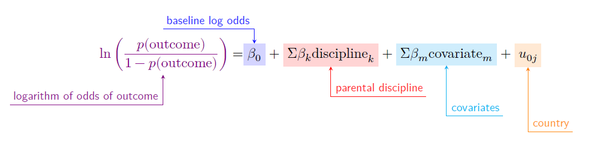

What Should Parents Do?
Positive and Negative Parental Discipline Behaviors And Child Outcomes Across 60 Countries
Parents raise their children in a variety of ways.
The objective of this study was to test the associations between 11 caregiver aggressive and nonaggressive discipline behaviors and outcomes (aggression and prosocial peer relations) of children under 5 in low- and middle-income countries (LMICs).
Data came from the fourth (2009-2013) and fifth (2012-2017) rounds of the UNICEF Multiple Indicator Cluster Surveys (MICS).
Analyses were restricted to households with children under 5 years, leaving a sample of 229,465 respondents across 60 LMICs.
Data were analyzed using a statistical method known as Bayesian multilevel logistic regression.
Different forms of discipline had different effects.
Verbal reasoning (80%) and shouting (66%) were the most common parental discipline behaviors toward young children.
Psychological and physical aggression had similar effects.
Psychological and physical aggression were associated with higher child aggression.
Verbal reasoning was associated with lower aggression and higher prosocial peer relations.
Taking away privileges was associated with lower prosocial peer relations.
Results indicated some country-level variation in the associations between parenting behaviors and child socio-emotional outcomes.
However, the associations of discipline with child outcomes were still largely consistent across countries.
Psychological and physical aggression were disadvantageous for children’s socio-emotional development across countries.
Only verbal reasoning was associated with positive child socio-emotional development.
No form of psychological aggression or physical aggression benefited child socio-emotional development in any country.
Greater emphasis should be dedicated to reducing parental use of psychological and physical aggression across cultural contexts.

flowchart LR classDef yellow fill:#FFC20E,stroke:#000000,stroke-width:2px,color:#000000; classDef blue fill:#374EA2,stroke:#000000,stroke-width:2px,color:#FFFFFF; classDef green fill:#00833D,stroke:#000000,stroke-width:2px,color:#FFFFFF; classDef orange fill:#D86018,stroke:#000000,stroke-width:2px,color:#FFFFFF; classDef red fill:#9A3324,stroke:#000000,stroke-width:2px,color:#FFFFFF; explained[explained why behavior was wrong]:::green shouting:::red
flowchart LR classDef yellow fill:#FFC20E,stroke:#000000,stroke-width:2px,color:#000000; classDef blue fill:#374EA2,stroke:#000000,stroke-width:2px,color:#FFFFFF; classDef green fill:#00833D,stroke:#000000,stroke-width:2px,color:#FFFFFF; classDef orange fill:#D86018,stroke:#000000,stroke-width:2px,color:#FFFFFF; classDef red fill:#9A3324,stroke:#000000,stroke-width:2px,color:#FFFFFF; explained[explained why behavior was wrong]:::green explained --> higherprosocial[higher prosocial peer relations]:::blue shouting:::red --> higheraggression[higher aggression]:::yellow spanking:::red --> higheraggression takingawayprivileges[taking away privileges]:::orange --> lowerprosocial[lower prosocial peer relations]:::yellow
flowchart LR classDef yellow fill:#FFC20E,stroke:#000000,stroke-width:2px,color:#000000; classDef blue fill:#374EA2,stroke:#000000,stroke-width:2px,color:#FFFFFF; classDef green fill:#00833D,stroke:#000000,stroke-width:2px,color:#FFFFFF; classDef orange fill:#D86018,stroke:#000000,stroke-width:2px,color:#FFFFFF; classDef red fill:#9A3324,stroke:#000000,stroke-width:2px,color:#FFFFFF; shouting:::red --> higheraggression[higher aggression]:::yellow spanking:::red --> higheraggression
flowchart LR classDef yellow fill:#FFC20E,stroke:#000000,stroke-width:2px,color:#000000; classDef blue fill:#374EA2,stroke:#000000,stroke-width:2px,color:#FFFFFF; classDef green fill:#00833D,stroke:#000000,stroke-width:2px,color:#FFFFFF; classDef orange fill:#D86018,stroke:#000000,stroke-width:2px,color:#FFFFFF; classDef red fill:#9A3324,stroke:#000000,stroke-width:2px,color:#FFFFFF; explained[explained why behavior was wrong]:::green --> loweraggression[lower aggression]:::blue explained --> higherprosocial[higher prosocial peer relations]:::blue
flowchart LR classDef yellow fill:#FFC20E,stroke:#000000,stroke-width:2px,color:#000000; classDef blue fill:#374EA2,stroke:#000000,stroke-width:2px,color:#FFFFFF; classDef green fill:#00833D,stroke:#000000,stroke-width:2px,color:#FFFFFF; classDef orange fill:#D86018,stroke:#000000,stroke-width:2px,color:#FFFFFF; classDef red fill:#9A3324,stroke:#000000,stroke-width:2px,color:#FFFFFF; takingawayprivileges[taking away privileges]:::orange --> lowerprosocial[lower prosocial peer relations]:::yellow

Citation: Ward, Kaitlin P, Andrew Grogan-Kaylor, Julie Ma, Garrett T Pace, and Shawna J Lee. 2023. “Associations Between 11 Parental Discipline Behaviors and Child Outcomes Across 60 Countries.” 13(10), BMJ Open, https://bmjopen.bmj.com/content/13/10/e058439.